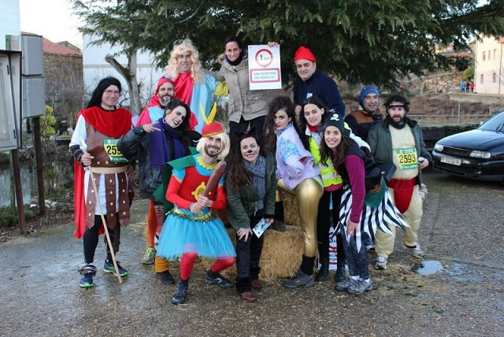
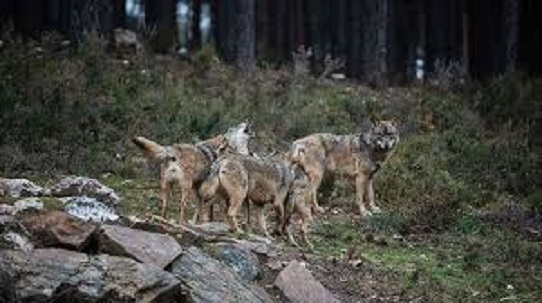

San Juan es una localidad que pertenece al municipio de San Vitero y que tambien se encuentra bastannte cerca de la frontera con portugal y tiene bastante historia como San Vitero.
San Juan es un pueblo en el que muchas casas tiene unos grandes rasgos prerromanos y que casi todos los años se encuentran artulugios de origen celta ya que los servicios agricolas estan creciendo a mucha velocidad y cuanto mas grande sea la maquinaria, mallor sera la profundidad a la que trabaja por lo que se encuentar objetos muy antiguos que no se habien descubierto antes como por ejemplo, monedas, cuchillos, arcos, flechas.
Pero en esta localidad no solo se encuentran estos tipos de artilugios sino que se hizo una mira para una carretera cercana y durante todos estos años se han estado encontrando fosiles de animales marinos incrustados en las pizarras. Ya que por esta zona de Zamora hay muchas canteras de piezarra ya que hay muchos yacimientos.
Y hay hay muchas fietas gracias a todo lo nombrado antes, como por ejemplo hacen una fiesta para que halla un gran año de cosecha y no halla sequia ,para que ese año los capesinos puedan tener mas dinero y asi poder progresar mas deprisa. Pero no solo hay estas fiestas sino que tambien hay una gran hoguera ya que las personas de antes eran muy supesticiosas y eso se traduce a que dia de hoy en verano la epoca mas importante para la agricultura halla muchas fiestas para angeles, apostoles por que se pensaban que asi vendria un año mejor.
Pero este pueblo no solo esta lleno de supesticiones sino que al estar en una zona bastante aztiva de animales salvajes, eso se traduce en que hay muchos cazadores que van alli para cazarlos y muchas otras personas simplemente van a verlos y a disfrutar del paisaje
Pero para los amantes del motor todos los años hacen una exibicion de coches off road en la antigua cantera, como puedes ver en el siguente video.